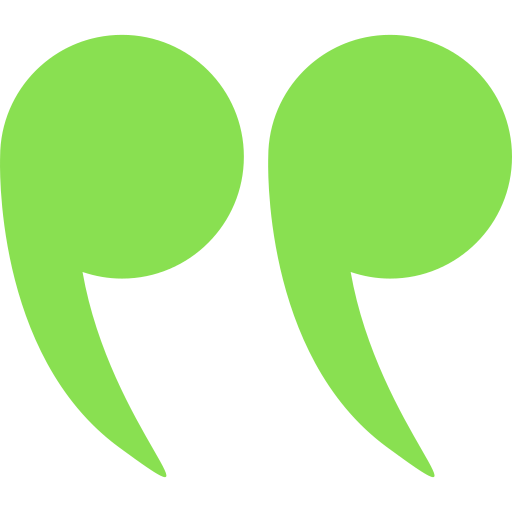
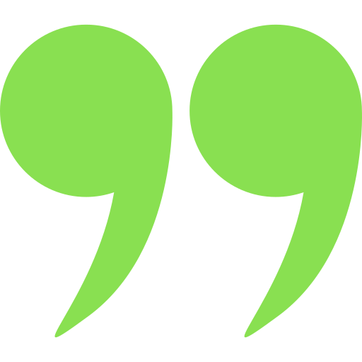

 Je m'appelle Sébastien Candau, j'ai grandi dans un petit village du sud-ouest de la France. Très vite, je me suis passionné par l'informatique et la data. Je me qualifierai comme quelqu'un de sérieux, de bon vivant et comme un amoureux de la France. Mes proches disent de moi que je suis quelqu'un d'assez créatif et plutôt littéraire car j'aime la politique, la philosophie et la littérature en général. Je joue du piano et j'aime dessiner, même si cela fait longtemps que je n'ai pas touché à un crayon car mes études en informatique me passionnent et me prennent beaucoup de temps. 

Se dépasser c'est la capacité à se poser des objectifs et à donner le meilleur de soi-même, à se relever dans la difficulté et à ne pas se reposer sur ses acquis. Cela permet d'aller plus loin, d'apprendre ou de s'améliorer. La boxe me permet de me dépasser et m'apprend à affronter la dureté du réel. J'essaye de retranscrire cette mentalité-là dans la vie de tous les jours pour que chaque jour nouveau, je sois une meilleure version de moi-même.
Contact
Coin crypto
Bitcoin donne la possibilité aux gens de réellement posséder leur argent. Vous ne pouvez pas posséder quelque chose si quelqu’un peu diluer la valeur correspondante en en produisant davantage ou en jouant sur l’inflation. Avec Bitcoin, le montant qui est créé est connu et c’est tout.
Trace Mayer
Accéder au coin crypto